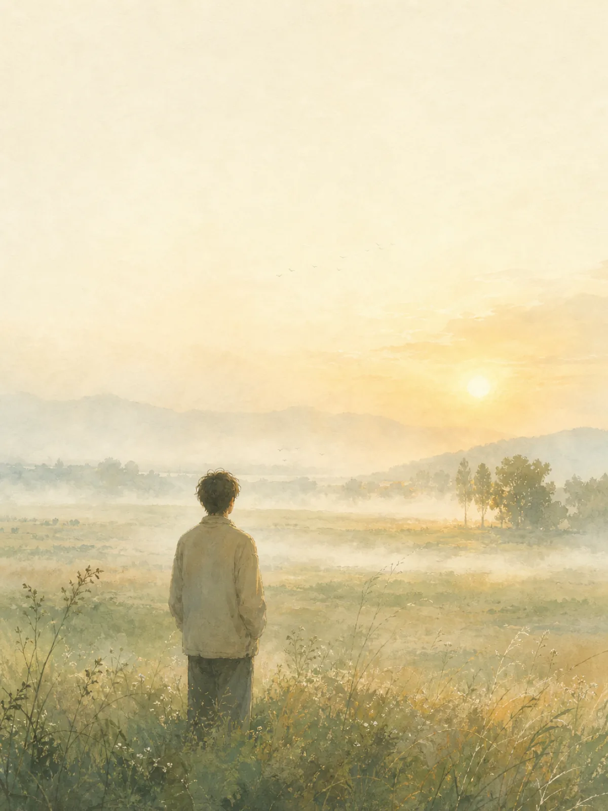
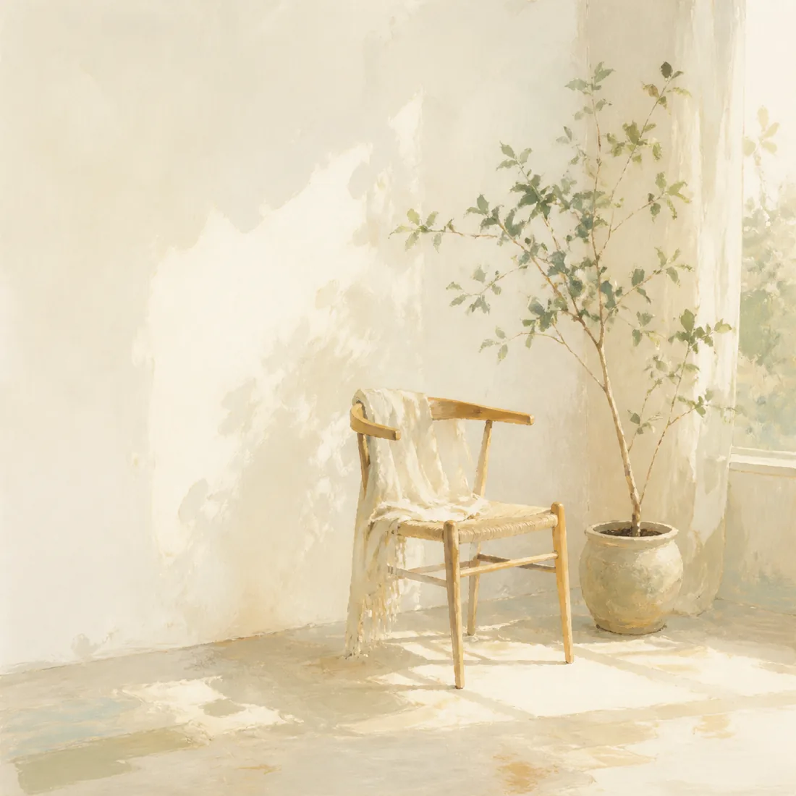

代表作
《我花一个晚上，
搞懂了 Harness》
大模型只是引擎，Harness 才是让它真正干活的底盘。把 Agent 系统里工具调用、上下文管理、循环控制这套工程骨架讲透——写作，是我确认自己是否真懂的方式。
在数据的田野上，
把一片朦胧的「好看」，
慢慢耕成清晰可量的标准。
AI Data Ops · Multimodal Evaluation
AI 数据运营 · 多模态模型评测
我做的事，说到底，是把「模型生成得好不好」这个说不清的问题，变成一群人能一起执行、能拿数字说话的标准。视觉与美学的判断天生主观，我习惯先自己看够多的数据，再把朦胧的直觉，一层层拆成可量、可复核、能反哺算法的规则。
在美团 LongCat 视频组，我负责视频生成模型的评测组织与质量控制；更早的腾讯混元，我做人像美学与 VQA 数据生产，带过 40 人的标注团队。手边的重复活，我也爱用 AI 工具把它们悄悄自动化。

把主观的视频效果，转成可统计、可复核、可指导训练迭代的结论。搭起覆盖画面质量、动态稳定性、主体一致性、指令遵循、音画同步的六维评测体系，并把 AI 自动化质检从「抽帧」一路推到「完整视频理解模型」。
围绕人像高质量 SFT 与 VQA 视觉强化两条线，负责规则设计、40 人标注团队管理与模型验证。主导把「美感」解耦成八个可量化维度，引入「双人盲标 + 公式化争议判定」，让审美不再各执一词。
慢慢往下滑——滑到这里，卡片会自己缓缓展开、翻过身来，露出它背后「怎么跑起来」的样子。
10 个场景走通「原始数据 → 标注 → 结果」的完整链路，一个统一平台切换不同模板去标不同的数据。
点开体验 →从「评什么」一路推到「什么条件下跑」，让一群人对同一段视频，打出一致的分。
读一读 →接需求 → 写规则 → Prompt → Workflow → 复核回流，一条学生能亲手跑通的主线。
看课程 →资料经 lorekit 编译成长期知识库，Claude 主控 × Codex 第二工程师分工协作，把重复活自动化。
看系统 →把一段视频拆成六个正交维度，每个维度都配「拆解口径」和典型 badcase，让判断可复现。
看维度 →爬取、抽帧、音视频分离、自动化描述——把爬下来的重复流程做成插件，给同学用。
看工具 →大模型只是引擎，Harness 才是让它真正干活的底盘。把 Agent 系统里工具调用、上下文管理、循环控制这套工程骨架讲透——写作，是我确认自己是否真懂的方式。
围绕 AI 数据运营、多模态评测、AI 提效工作流做长期沉淀。把一线经验整理成能被别人复用的方法，也是把散落的手记，收成一册。
工作之外，也有远行、书页与一盏灯下的手作。这些是给生活留的几帧。（暂用 AI 绘制的意象图，随时可换成你自己的照片。）

若你也在找一个
愿把「好」
慢慢种成标准的人——
微信 / 电话，见简历内附。